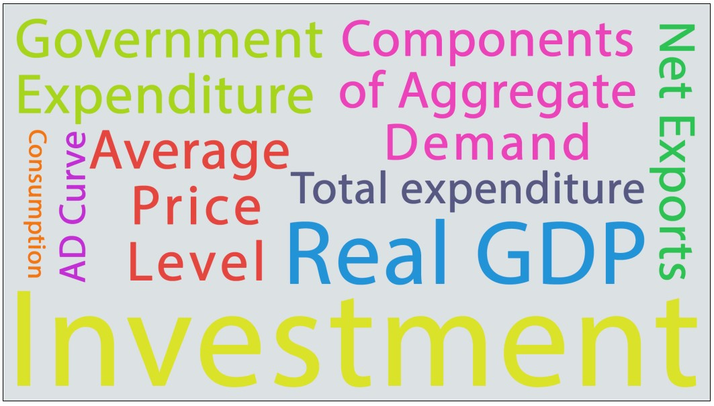
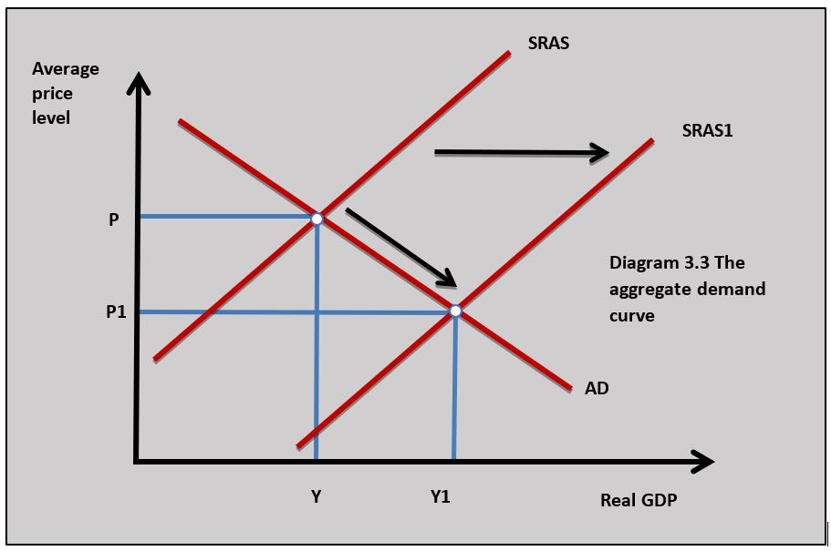
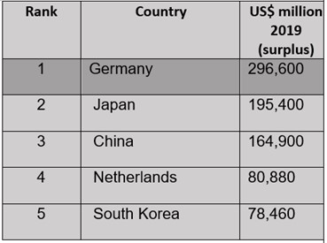
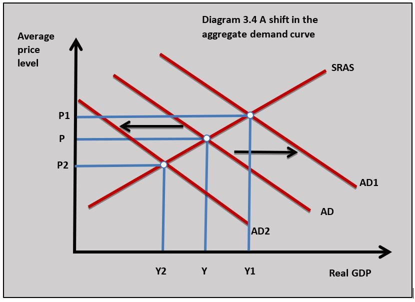
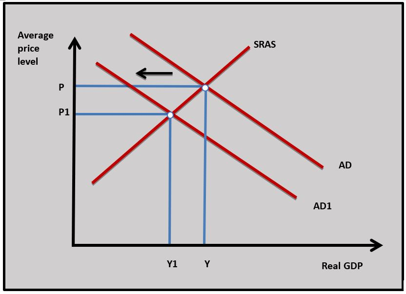
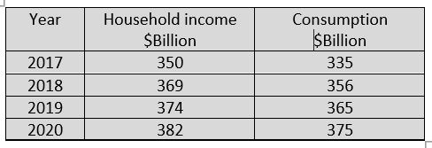

IB Docs (2) Team
IB Docs (2) Team

Unit 3.2(1): Variations in economic activity - aggregate demand (AD)
The level of economic activity measured by the real GDP of a country is determined by the interaction of aggregate demand and aggregate supply of the whole economy. Changes in aggregate demand and aggregate supply determine the rate of economic growth an economy achieves. An understanding of aggregate demand and supply is crucial to understanding how the macroeconomy functions.
- Definition of aggregate demand

- Aggregate demand curve
- Components of aggregate demand
- Consumption
- Investment
- Government expenditure
- Net exports: exports minus imports
- Changes in aggregate demand caused by changes in its determinants
Revision material
 The link to the attached pdf is revision material from Unit 3.2(1): Variations in economic activity - aggregate demand (AD). The revision material can be downloaded as a student handout.
The link to the attached pdf is revision material from Unit 3.2(1): Variations in economic activity - aggregate demand (AD). The revision material can be downloaded as a student handout.
Determining economic activity
The level of economic activity in a country is measured by its real GDP which is determined by the interaction of aggregate demand and aggregate supply of the whole economy. Changes in aggregate demand and aggregate supply determine the rate of economic growth an economy achieves. For example, the value of the US GDP is over $21 trillion because of the interaction of aggregate demand and aggregate supply in the American economy. The application of aggregate demand and supply is another way of modelling the macroeconomy, similar to the circular flow of income model. The flow of income, output, and expenditure of an economy in the circular flow model is determined by the interaction of aggregate demand and aggregate supply.
GDP in the United States stood at $21990 billion at the end of 2020 according to Trading Economics. That makes it the biggest economy in the world and the biggest economy of all time. This was, however, before the Covid19 pandemic, although even with this crisis the US will still comfortably be the biggest economy in the world.
 Worksheet questions
Worksheet questions
Questions
a. Explain how the economic growth rate is measured in the US in 2020. [4]
The real GDP figures need to be established in the US in 2019 and 2020. This is calculated by dividing the nominal GDP in each year by the GDP deflator. The following equation is to measure the growth rate:
US GDP 2020 - US GDP 2019 / US GDP 2019 x 100 = US economic growth rate 2020
b. Using a circular flow of income diagram, explain what the US real GDP figure of $21990 shows. [4]
 The US real GDP figure of $21,990 is the money value of all final goods and services produced by the US economy in a given time period (one year) with an allowance for inflation. The real GDP figure can be measured by the income, output and expenditure methods which are illustrated in the circular flow of income diagram.
The US real GDP figure of $21,990 is the money value of all final goods and services produced by the US economy in a given time period (one year) with an allowance for inflation. The real GDP figure can be measured by the income, output and expenditure methods which are illustrated in the circular flow of income diagram.
Investigation
Investigate the reasons that might explain the size of the US economy.
Definition of aggregate demand
Aggregate demand is the total expenditure on all final goods and services produced in the economy at a given price level and at a given point in time.
Aggregate demand is made up of the following components:
AD = consumption + investment + government expenditure + exports – imports
AD = C + I + G + (X – M)
The Aggregate Demand Curve
The Aggregate demand curve shows the relationship between the average price level of an economy and the demand for the real output or GDP of the economy. The average price level of the economy is the average price of all goods and services produced in an economy at a given point in time.
The relationship between aggregate demand and the average price level can be viewed in the same way as the microeconomic theory of the law of demand for a good in a particular market. If the price of mobile phones falls, the quantity demanded increases. In the same way, a decrease in the average price level in the macroeconomy leads to an increase in the aggregate demand for the real output of the economy and if the average price level increases the aggregate demand for the real output decreases.

One way of explaining this is that a fall in the average price level means households, firms, government, and foreign sector can now buy more of the domestic output of the economy with the same real income. Diagram 3.3 shows how a fall in the average price level in an economy causes an increase in aggregate demand for the real output of the economy. If there is a rise in the average price level this means households, firms, government and foreign sectors can buy less of the domestic output of the economy with the same real income.
Consumption (C)
Definition of consumption
Consumption is household spending on final goods and services. Some goods are intermediate such as manufacturers selling goods to retailers and this spending is not included in consumption.
Consumption spending would be spending on goods and services like food, energy, consumer electronics products, cars and leisure activities, etc. Consumption spending in More Economically Developed Countries (MEDCs) accounts for around 70 per cent of total GDP and is even higher than this in Economically Less Developed Countries (ELDCs).
Determinants of consumption
Household income and consumption
There is a positive relationship between consumption and household income. As household incomes rise, households spend more on normal goods. This includes necessities such as food and energy, as well as spending on luxuries such as new cars and holidays. We know from our microeconomic analysis that the strength and type of relationship between income and consumption changes depending on the type of good and its income elasticity of demand.
Interest rates
An interest rate is the cost borrowers pay for borrowed funds and the reward lenders receive for lending funds (the cost of borrowing and the reward for lending).
There is a negative relationship between consumption and interest rates. When interest rates rise consumption decreases and when interest rates fall consumption increases.
The relationship between interest rates and consumption exists for the following reasons:
- The cost of borrowing for expensive goods (cars, home improvements, etc.) increases when interest rates rise and spending for these types of ‘big ticket items’ falls.
- The reward for saving increases as interest rates rise which increases households' desire to save rather than spend.
- The cost of existing borrowing, particularly mortgage payments for house purchase, increase as interest rates rise and this leaves households with less disposable income for consumption.
Note: the opposite effect occurs when interest rates fall.
Consumer confidence
Consumer confidence is household expectations of their future economic prospects. Consumer confidence has a significant impact on current consumption spending. If households feel pessimistic about their job prospects or future incomes, they will reduce current consumption and consumption rises if they feel optimistic.
Economists see consumer confidence as an important ‘leading indicator’ because it tells them what might happen to economic growth in the future. In the US consumer confidence is measured by the CCI which is a survey of households produced by the Conference Board.
The ‘credit crunch’ in 2008 led to a huge fall in US consumer confidence which reduced household spending which in turn contributed to falling growth in GDP and this led to a recession in the US.
The consumer confidence model is a simple one: a rising confidence index indicates rising confidence, higher confidence means more consumption spending, and this increases GDP. If you can forecast consumer confidence, you can forecast economic growth.
But this model is seen as increasingly flawed for three reasons:
- If consumption is financed by debt, then the rise in consumption may not be a sustainable driver of economic growth. In the end, households need to pay the borrowed money back and make interest payments.
- Confidence surveys can skew confidence. Because confidence data is so widely reported it can distort consumption. If a headline says, ‘record drop in confidence’ this might artificially cause consumer confidence to fall.
- Because economies are increasingly globalised and complex, confidence data is not as useful at forecasting changes in GDP. Changes in global stock and bond markets may have a greater impact on future US GDP than a change in the US CCI index.
Questions
a. Define the term consumption expenditure. [2]
Consumption is household spending on final goods and services.
b. Explain why a decrease in interest rates in the US might lead to an increase in consumption expenditure in the US economy. [4]
When interest decrease in the US consumption expenditure might increase because:
- Saving becomes less attractive as interest payments fall
- Borrowing to fund major items of expenditure becomes less expensive
- Household disposable income rises as existing interest payments decrease.
c. Define the term consumer confidence. [2]
Consumer confidence is household expectations of their future economic prospects.
d. Using a diagram, explain how a rise in US consumer confidence might affect US aggregate demand. [4]
 As US consumer confidence rises households are more optimistic about consumption spending on goods and services and this leads to a rise in consumption in the US economy. Consumption is a component of aggregate demand which means a rise in consumption spending will lead to a rise in aggregate demand in the US. This is shown in the diagram by an increase in aggregate demand from AD to AD1.
As US consumer confidence rises households are more optimistic about consumption spending on goods and services and this leads to a rise in consumption in the US economy. Consumption is a component of aggregate demand which means a rise in consumption spending will lead to a rise in aggregate demand in the US. This is shown in the diagram by an increase in aggregate demand from AD to AD1.
e. Using the circular flow of income model, explain how a rise in savings caused by a fall in consumer confidence in a country affects its firms, households, and government. [10 marks]
Answers might include:
- Definitions of the circular flow of income model and savings.
- A diagram to show the circular flow of income that illustrates how a rise in savings reduces the funds in the circular flow. In the diagram, a rising in savings is shown by the yellow withdrawal arrow.
- An explanation that a rise in savings increases withdrawals from the circular flow of income which reduces consumption expenditure. This can lead to a fall in revenues and profits for firms in the economy.
- An explanation that lower business revenues mean firms will pay less income to households in the form of wages, interest, rent and profits.
- An explanation that less household consumption expenditure, lower household incomes and less business profits can lead to a fall in government tax revenue and this could increase the budget deficit.
- An example of a country such as the UK where savings have increased during 2020-21 because of the pandemic and how this has led to a fall in real GDP in the UK.
Investigation
Think about how you might produce a consumer confidence survey amongst people at your school.
Household indebtedness
Indebtedness is the value of current household borrowing. The higher the value of debt households hold the lower their current level of consumption. This is because households have less money for current consumption if they need to repay debt and have high-interest payments to make on their outstanding debt.
Wealth
Household wealth is the value of assets households own. These are assets that can be held in the following forms: cash, property and shares, etc. The most important asset for most households in the economy is the house they own.
When house prices rise people feel wealthier and this increases their consumption spending. House prices in the UK increased dramatically from 2011 until 2016 leading to a significant increase in household wealth which caused a rise in consumption spending in the UK.
If house prices fall households feel poorer and this can lead to a fall in consumption. It was the fall in US house prices in 2006 that triggered a fall in consumption in the US which was one of the contributing factors to the recession in the US in 2008 and the subsequent global financial crisis.
Inflation
Inflation can have two different effects on consumption:
- Rising prices can make consumers bring forward purchases and increase consumption. This is because waiting to buy goods when they will increase in price in the future makes the goods more expensive and households will consume more in the present.
- If prices rise because of increasing costs, this erodes household disposable income and causes a fall in consumption spending. This is particularly the case if the price of necessities such as food and energy increases.
Investment (I)
Definition of investment
Investment is where resources are allocated to produce capital goods that can build up the future productive capacity of an economy. Investment is an injection into the circular flow of income. Economists normally consider investment in terms of firms buying new plant and machinery. For example, Apple’s investment spending last year was $16 billion.
Types of investment
Investment spending by organisations can be categorised in five different ways:
- Fixed investment is where firms purchase plant and machinery. For example, Toyota plans to build a new electric vehicle plant worth $1.2 billion in the Chinese city of Tianjin.
- Human investment means that firms allocate resources to education and training which are used to increase the productive capacity of labour.
- Research and development is investment in new products and processes. Research and development account for 7.9 per cent of Apple’s revenue and it spent $14 billion on R&D last year.
- Social investment involves allocating resources that can improve the future welfare of a country’s citizens. Building new schools and hospitals have significant social benefits for society in the long term.
- Infrastructure investment means allocating resources to the major physical systems that serve a country’s population. Infrastructure investment is in areas like energy, transport, water and waste, flood management and digital communications.
Determinants of Investment
Economic growth and investment
A certain amount of investment takes place in an economy and is not affected by changes in GDP. Firms often plan major projects years in advance and unless there is a significant drop in economic growth the projects go ahead regardless of changes in GDP. Replacement investment is also less affected by changes in economic growth. This is where firms have to replace worn-out capital and it needs to take place for a firm to operate efficiently.
Some investment is responsive to changes in GDP. As the economy grows (particularly if the rate of growth increases) businesses will invest in new capital because they need to increase output to meet an increase in demand. This is particularly true for firms that sell products with a high positive income elasticity of demand. For example, service sector businesses like restaurants, cinemas and gyms will increase investment in new capital to meet a rise in demand when household incomes rise.
Business confidence Availability of funds At a macroeconomic level, the funds available for the economy to invest are determined by the level of savings. Household savings goes to the banking system and banks then lend these funds to firms to invest. The higher the level of savings of households the more funds there are for investment and the greater the amount of investment there will be at a macroeconomic level. The profits earned by businesses are a major source of funds for firms and the more profits businesses earn the higher the level of investment. The amount of bank lending affects how much money firms can access to fund investment projects. The financial crisis of 2008 saw banks cut their lending dramatically to businesses which reduced the level of investment. Interest rates Because so many investment projects are funded partly or entirely by borrowed funds the rate of interest has a major effect on their viability. At relatively high rates of interest the cost of borrowing is increases which reduces the profit stream from an investment project which makes the project less likely to go ahead. High interest rates also offer firms a relatively good rate of return on holding funds in the bank so the rate of return of a project has to be greater than the rate of interest funds could earn in the bank. If interest rates fall then investment rises because the cost of funding projects falls and the alternative return from holding funds in the bank decreases. Corporate indebtedness Indebtedness is the value of borrowing firms currently have. The amount firms can borrow is reduced if they carry high level of debt. Large debts have high interest costs and make banks reluctant to lend to firms.")
Business confidence is manager’s expectations of future profits and sales. It is important in determining investment decisions. If managers anticipate a rise in future economic growth, they are much more likely to decide to open a new factory and buy capital equipment. Business confidence in different countries is often measured by using the Purchasing Managers Index (PMI)
Availability of funds
At a macroeconomic level, the funds available for the economy to invest in are determined by the level of savings. Household savings goes to the banking system and banks then lend these funds to firms to invest. The higher the level of savings of households the more funds there are for investment and the greater the amount of investment there will be at a macroeconomic level.
The profits earned by businesses are a major source of funds for firms and the more profits businesses earn the higher the level of investment. The amount of bank lending affects how much money firms can access to fund investment projects. The financial crisis of 2008 saw banks cut their lending dramatically to businesses which reduced the level of investment in many economies.
Interest rates
Because so many investment projects are funded partly or entirely by borrowed funds the rate of interest has a major effect on their viability. At relatively high rates of interest the cost of borrowing increases which reduces the profit stream from an investment project and makes the project less likely to go ahead. High-interest rates also offer firms a relatively good rate of return on holding funds in the bank so the rate of return of a project has to be greater than the rate of interest funds could earn in the bank. If interest rates fall then investment rises because the cost of funding projects falls and the alternative return from holding funds in the bank decreases.
Corporate indebtedness
Indebtedness is the value of borrowing firms currently have. The amount firms can borrow is reduced if they carry a high level of debt. Large business debts have high-interest costs and make banks reluctant to lend to firms.
The Burj Khalifa is an 829.8 m (2,722 ft) skyscraper in Dubai. The building was completed in 2009 at a cost of $1.5B. It houses offices, residential homes, hotels, leisure facilities and retail space. It is not a cheap place to live or to locate a business. Two-bedroom apartments go for about $2m. Real estate is an important part of investment in a country where buildings increase the productive capacity of the economy.
Questions
a. Define the term investment. [2]
Investment is where resources are allocated to produce capital goods such as plant and machinery that can build up the future productive capacity of an economy.
b. Explain a fall in interest rates might have affected the decision to invest in the Burj Khalifa. [4]
c. Outline how the business that built the Burj Khalifa would have made a profit from it. [2]
The Burj Khalifa would have made a stream of future profits for its owners when it rents or sells space in the building for offices, shops, hotels and other types of leisure activity.
Investigation
Research into another major investment project and the factors that influenced the decision to go ahead with it.
Government expenditure (G)
Types of government expenditure
Government expenditure has an important influence on macroeconomic activity. Most government spending accounts for between 30 and 40 per cent of GDP. Government expenditure is an injection into the circular flow of income. There are three types of government expenditure in the economy:
- Current expenditure on the day-to-day running of the government sector such as paying the wages of teachers, doctors and military personnel.
- Capital expenditure on investment projects financed by the government such as roads, bridges and schools.
- Transfer expenditure on welfare payments such as unemployment and housing benefits. It is important to note that government transfer spending is not included as part of aggregate demand because there is no productive return for the spending by the government.
Determinants of government expenditure
Fiscal policy
Fiscal policy is where government expenditure and taxation are used to achieve a government’s economic objectives. These objectives include areas such as sustainable economic growth, price stability, full employment, and balance of payments equilibrium. Government plan their level of expenditure to achieve these objectives. For example, the government might increase expenditure to increase economic growth if the economy is in a recession.
Taxation
The amount of money a government can raise through taxation will have a major influence on the amount governments can spend. Rich developed countries collect more money through direct and indirect taxation and this enables them to spend more on public services like health and education than economically less developed countries. The more tax the government can raise the more it can spend.
Borrowing
When government expenditure is greater than tax revenue the government needs to borrow money. This is done by selling bonds in the financial markets. For example, if the US government sells $500 billion of government bonds, then it will raise $500 billion in funds to spend on health, education and defence, etc.
Investors buy bonds because they earn interest on them and they will be repaid in the future. The bonds can also be bought and sold on the financial markets. The budget deficit is one year’s government borrowing and accumulated government borrowing over time is called the national debt. The current US budget deficit is $2.5 trillion, and the national debt is $25 trillion.
Political objectives
The political objectives of the government will affect the level of expenditure. Left-wing governments tend to believe in more state involvement in the economy will spend more than right-wing governments.
Denmark is one of the most generous countries in the world when it comes to government welfare spending averaging 55% of GDP over the last 20 years. Denmark is a rich country with a GDP per capita of $60,897 last year and it has a high average rate of tax of 55%. The Danish government has a plentiful source of tax revenue to fund such a significant state welfare programme.
Denmark leads other OECD countries in terms of spending on old age-related programs and health-related expenditures. The country is very supportive of the poorest in its society with a poverty rate of just 5.4% (lowest in the OECD). More than 33% of all transfer spending in Denmark goes to the bottom 20% of income earners. The country’s borrowing levels are relatively modest with a national debt of 34% of GDP and a budget deficit of 0.6% of GDP.
Worksheet questions
Questions
a. Define the term budget deficit. [2]
The budget deficit is one year’s government borrowing where government expenditure is greater than government revenue.
b. Explain the differences between government current, transfer and capital expenditure. [4]
Current expenditure on the day-to-day running of the government sector such as paying the wages of teachers, doctors and military personnel. Capital expenditure on investment projects financed by the government such as roads, bridges and schools. Transfer expenditure on welfare payments such as unemployment and housing benefits.
c. Explain two ways the Danish government can finance its expenditure. [4]
Denmark's government could raise funds to finance its expenditure through tax revenue. This could be a direct tax on household incomes and business profits along with an indirect tax on expenditure such as VAT. The second way it could raise money is through borrowing by selling bonds.
Investigation
Investigate the reasons why Denmark has such a generous government welfare system.
Net Exports (X-M)
Defining net exports
A country’s net exports are the value of its exports (X) less the value of its exports imports (M). A positive value for net exports leads to a net inflow of funds into the economy and a negative net export value leads to a net outflow of funds from the domestic economy.
Exports
Exports are domestically produced goods and services sold in overseas markets that generate an inflow of funds into the domestic economy. Exports are an injection into the circular flow of income.
Imports
Imports are goods and services produced overseas and sold in the domestic economy that generate an outflow of funds from the domestic economy. Imports are a withdrawal from the circular flow of income.
Determinants of net exports
Net exports will change if there is a change in the value of exports and imports.
Economic growth in overseas markets
If there is strong economic growth in overseas markets this will lead to a rise in exports as foreign households have more income to spend on imported goods (exports) from other countries. The reverse is true if overseas markets are in recession and foreign households have less income and buy fewer imported goods (exports) from other countries.
Economic growth in domestic markets
If domestic economic growth rises households will have rising incomes and will spend more on imports and this will lead to a fall in net exports. If domestic growth falls household spending on imports will fall because households will have lower incomes and will buy fewer imported goods which leads to a rise in net exports.
Exchange rate
If the domestic exchange rate falls, domestic exports may rise as domestic export prices fall in overseas markets. A fall or (depreciation) in the exchange rate will also lead to a rise in import prices which may lead to a fall in import expenditure. If the exchange rate rises (appreciates) domestic goods will rise in price overseas and the demand for exports will fall. A rise in the exchange rate will cause a fall in the price of imports and a rise in demand for them.
Trading strength
Some countries perform better in international markets than others. China, Germany and Japan have very strong manufacturing sectors and have a positive next export value. On the other hand, countries like the US and UK have weaker manufacturing sectors and have a negative net export value.

In 2019 Germany posted the biggest surplus value of exports less value of imports (net exports) in the world. One of the reasons for its trading success is the size and quality of its manufacturing sector. Manufacturing makes up over 20 per cent of Germany’s GDP partly because it has so many great manufacturing names like BOSCH, Siemens, BMW and Allianz. You can see why Germany is such a successful trading nation. Worksheet questions
Questions
a. Define the term net exports. [2]
A country’s net exports are the value of its exports (X) less the value of its exports imports (M).
b. Explain how an increase in the surplus in Germany’s net exports might affect the country’s aggregate demand. [4]
As the surplus in Germany's net exports increases the country's aggregate demand will rise because in the equation:
AD = C + I + G + X - M
An increase in net exports (X - M) will increase AD.
c. Explain why Germany's strength in manufacturing might account for its surplus in net exports. [4]
Because Germany is so competitive in producing goods such as cars, consumer electronics goods and industrial products the demand for its goods is very strong in overseas markets which earns it high levels of export revenue. Overseas businesses will also find it difficult to sell into the German market because German businesses are so competitive and this reduces German imports.
Investigation
Research another country that has a significant trade surplus and find out why it is a successful trading nation.
Changes in aggregate demand

Aggregate demand will change if any one of consumption, investment, government expenditure and net exports change. A change in the components of aggregate demand will cause the aggregate demand curve to shift. Diagram 3.4 shows an increase in aggregate demand and the aggregate demand curve in the economy shifts from AD to AD1 changes. A decrease in aggregate demand is also shown by a shift in the aggregate demand curve from AD to AD2.
Examples of factors that may cause a change in AD:
Decrease in interest rates
If interest rates fall this leads to a rise in consumption and investment as households and firms respond to lower borrowing costs and this, in turn, leads to a rise in aggregate demand. AD shifts to AD1 in diagram 3.4.
Fall in business and consumer confidence
If households and firms become less confident about their future economic prospects, then households will reduce consumption and firms will reduce investment leading to a fall in aggregate demand and AD shifts to AD2 in diagram 3.4.
Increase in government expenditure
If government expenditure increases as part of expansionary fiscal policy this will lead to a rise in aggregate demand. This causes AD to shift to AD1 in diagram 3.4.
The rise in net exports
If a country’s exchange rate depreciates and it experiences a rise in exports and a fall in imports, then aggregate demand will increase, and AD will shift to AD1 in diagram 3.4.
China is beginning to shake off the effects of Covid19 and Chinese consumers might offer us a sense of where a world economic recovery might come from. Chinese annual consumer spending is approaching $8trillion annually and it represents a huge opportunity for the world’s exporting companies. Helped by low interest rates, rising consumer confidence, and increasing asset prices the Chinese consumer is in the mood for spending.
Worksheet questions
Question
Explain the effect a rise in consumer confidence and a decrease in interest rates might have on China's aggregate demand. [10]
 Answers might include:
Answers might include:
- Definitions of consumer confidence, interest rates and aggregate demand.
- A diagram to show the effect of a rise in consumer confidence and a decrease in interest rates on China's aggregate demand.
- An explanation of how rising consumer confidence increases consumer expenditure and increases aggregate demand.
- An explanation that a decrease in interest rates increases consumer expenditure and increases aggregate demand.
Investigation
Research into the growing importance of China's consumption expenditure.
Many Economics courses start with coverage of scarcity and it is often looked at from a microeconomic perspective. It is also possible to consider scarcity in terms of macroeconomics when aggregate demand grows strongly and puts a country's limited resources under pressure. A nation's resources are scarce and when aggregate demand increases the price of scarce resources increases. Rising prices in particular in industrial sectors such as energy, housing and food are indicators of scarcity at a macroeconomic level.
How important is scarcity in causing the price level in an economy to increase when aggregate demand is rising?
Using the following data for country A, what is the level of aggregate demand?
$Bn G = 250; C = 520; X = 120; I = 410; M = 180
Which of the following is not true about consumption expenditure?
Which of the following is the best definition of an Interest rate?
Which of the following is unlikely to increase investment?
A fall in the Purchasing Managers Index indicates a fall in business confidence which would reduce investment.
Which of the following is not true about government expenditure?
A grant paid by the government to businesses is part of transfer expenditure.
Using the following data for country X, which of the following is true?
($Bn) G = 200; T = 150; National debt = 800; GDP 2000
Budget deficit:
Which of the following is most likely to cause an increase in the value of net exports of Country Y?
A fall in Country Y's exchange rate will make its export prices fall and import prices rise which can increase the value of exports and decreases the value of imports.
Which of the following is the most likely to cause a fall in AD to AD1 in Country B?

A decrease in government transfer expenditure reduces Country B's AD.
Which of the following is most likely to cause Aggregate Demand in Country X to fall?
A fall in consumer confidence in Country X is most likely to decrease AD because it causes consumption spending to fall.
Using the data in the table for Country B which of the following is most likely to be true?

As income rises consumption rises which shows a positive relationship between consumption and income.
 Twitter
Twitter
 Facebook
Facebook
 LinkedIn
LinkedIn